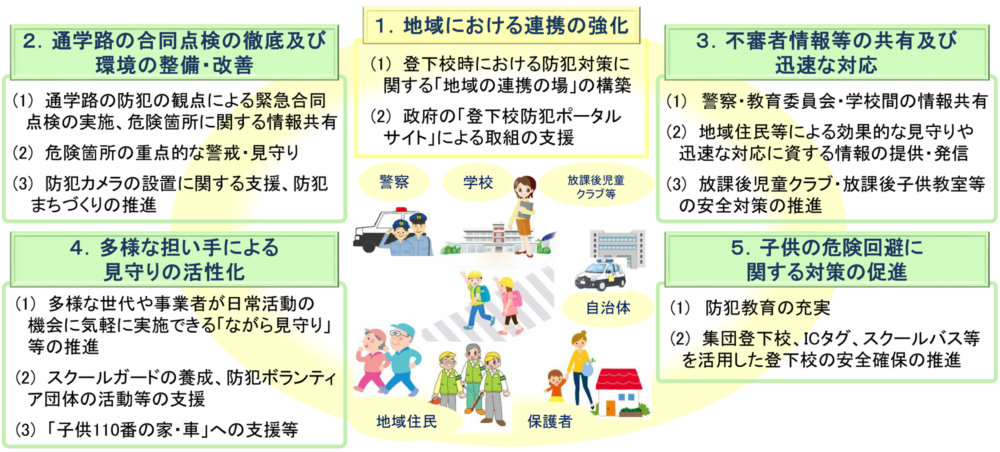
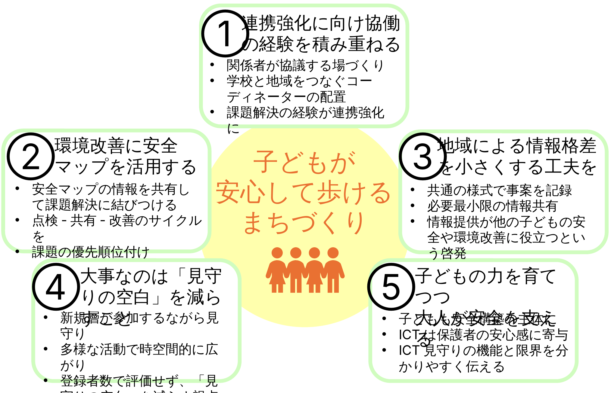

「登下校防犯プラン」から考える
子どもが安心して歩けるまちづくりへ
徒歩通学を維持・促進するには、保護者が安心して子どもを送り出せる物理的・社会的環境が欠かせません。防犯上の不安が高まれば、送迎の増加や子どもの行動範囲の縮小につながる可能性があります。一方、安全確保を子どもや保護者だけの責任にすることも適切ではありません。子どもが自分で歩いて移動できる環境を、学校、自治体、警察、保護者、地域住民の協働によって維持する必要があります。
登下校防犯プランとは
2018年、新潟市で下校中の小学生が被害に遭った事件を受け、政府は「登下校防犯プラン」を策定しました。プランでは、それまで個別に行われていた防犯の取組を整理し、次の5つを柱として地域全体で子どもの安全を支えることを示しています。
- 地域における連携の強化
- 通学路の合同点検の徹底及び環境の整備・改善
- 不審者情報等の共有及び迅速な対応
- 多様な担い手による見守りの活性化
- 子供の危険回避に関する対策の促進

事例と研究から見えた取組のヒント
登下校防犯プランの5つの柱について、私たちが関わる事例とその後の研究から、一歩踏み込んだヒントが見えてきました。上に示した①から⑤の柱の順に、それらのヒントを紹介します。
①･② 関係者の連携強化を通じて環境改善へ
松山市久米地区では、子ども、学校、地域住民等が一緒に安全マップを作成し、その結果を地域の会議で共有して環境改善につなげました。その際には、学校と地域をつなぐ地域コーディネーターが大きな役割を果たしました。関係者が地域の課題を一緒に発見・共有し、解決する経験を重ねることで連携を強くすることが重要です。また、安全マップを繰り返し作成し、以前指摘した場所が改善されたかを確認するとともに、解決しにくい課題を重点化して詳しい調査や環境改善につなげました。
③ 地域による情報格差を小さくするための工夫を
警察と学校の連絡体制や、防犯メールシステムがあるだけでは、どの地域でも同様の情報が共有されるとは限りません。共通の様式で事案を記録し、学校ごとの判断で情報を失わない仕組みにすることが考えられます。また、共有する情報を、被害者の属性を除いた必要最小限なものにすることで、プライバシーに配慮することができます。保護者には、個人情報が守られることに加え、提供した情報が他の子どもの安全につながり、情報を蓄積することで地域の環境改善にも役立つことを伝える必要があります。
④ 大事なのは登録者数ではなく「見守りの空白」を減らすこと
足立区の「ながら見守り」登録者の７割以上は防犯活動の経験がなく、従来の防犯活動で少なかった生産年齢層の参加が多く見られました。さらに、散歩や花壇活動などの多様な活動が組み合わさることで、様々な場所において、登下校時だけでなく広い時間帯に見守りの目が生まれていました。従来の防犯活動と組み合わせて「見守りの空白」を減らすことが重要です。自治体も、登録者数だけで活動を評価するのではなく、どこにいつ見守りの目があるかという時空間的な視点を持つことが求められます。
⑤ 子どもの力を育てつつ、大人が地域の安全を支える
上述した久米地区では、子どもが発見した課題を大人が環境改善につなげるとともに、経験した中学生が小学生を支える循環も生まれました。つまり、子どもは発達段階に応じて地域の安全構築の主体にもなれます。福岡市・大野城市のICタグ型見守りサービスの調査では、子どもの登下校時刻を確認できることで得られる安心感が保護者に評価されていました。 ICTを使った見守りは、人による見守りを補完する一つの手段として、その機能と限界を保護者や子どもに分かりやすく伝える必要があります。

実践への示唆：ソフトとハードの両面から防犯まちづくりを
子どものための防犯対策の目標は、危険を理由に子どもの行動を制限したり、保護者による送迎を増やしたりすることではありません。環境を改善し、地域の日常的な目を増やし、必要な情報を共有し、子ども自身の判断力も育てることで、保護者が安心して子どもの移動を認められる地域をつくることです。自治体や学校では、登下校防犯プランの5つの柱を個別に捉えるのではなく、地域の課題を把握し、情報を共有し、ソフトとハードの両面から改善する仕組みとして実施することが重要です。